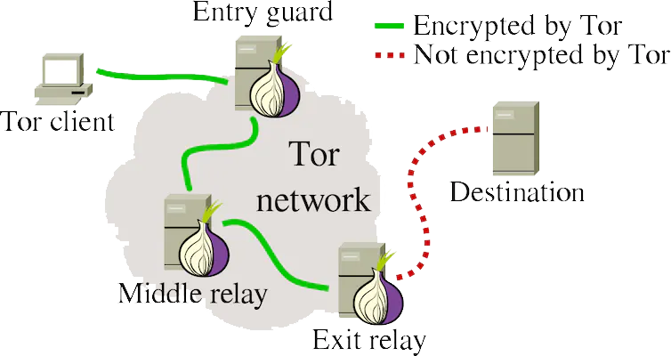
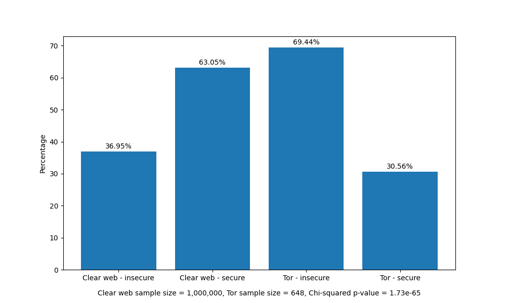

ACME for onions
Q Misell, King's Collage, Aberdeen
At the Max-Planck-Institut für Informatik
Wednesday 22nd of November 2023
Fedi: @q@glauca.space
Email: q.misell.21@abdn.ac.uk
What is an onion?
What is Tor?
The Onion Router
Ok but really what is an Onion?
5anebuc235wb...3vdtdvcg2i2m2qd.onion
address = base32(PUBKEY | checksum | VERSION) + ".onion"
checksum = H(".onion checksum" | PUBKEY | VERSION)[:2]
Tor Rendezvous Specification - Version 3 § [ONIONADDRESS]
Problem with this?
Only a bit of TLS on Onions
Why even have certificates?
- HTTP/2
- PCI DSS
- Defence-in-depth
- HTTPS only browser features
-
- Secure cookies
- Content Security Policy
Goals of this work
Define extensions to ACME to automate the issuance of X.509 certificates for Tor hidden services in line with the accepted methods in the CA/BF BR.
Non-goals
Any method not accepted by the CA/BF.
CA/BF?

CA/BF BR Appendix B
- § 3.2.2.4.18 - Agreed-Upon Change to Website v2
- § 3.2.2.4.19 - Agreed-Upon Change to Website - ACME
- § 3.2.2.4.20 - TLS Using ALPN
- § B.2.b - Special CSR
ACME?
RFC 8555
So I can just go get a certificate from Let's Encrypt?
Current state of things
- DigiCert (EV only)
- HARICA
- No automation
So lets actually automate this
Identifier type
{
"type": "dns",
"value": "bbcweb3hytmz...rad.onion"
}
Clients can be oblivious to the fact that the identifier is a Tor hidden service with "http-01" or "tls-alpn-01" validation methods.
New onion-csr-01 Validation Method
Implements CA/BF BR § B.2.b
Clients prove control over the .onion domain by signing a CSR with the key of the .onion domain.
Certificate Request:
Data:
Version: 1 (0x0)
Subject:
Subject Public Key Info:
Public Key Algorithm: ED25519
ED25519 Public-Key:
pub:
e8:1a:40:d3:46:5e:05:ad:f6:c1:0b:9f:b6:6a:8a:
ca:c0:f9:bd:50:de:f7:51:cc:75:12:5e:83:60:3f:
be:91
Attributes:
2.23.140.42 :unable to print attribute
2.23.140.41 :unable to print attribute
Requested Extensions:
Signature Algorithm: ED25519
Signature Value:
19:7d:36:f2:ff:91:8d:8b:c8:80:1b:01:01:b2:ad:78:0a:3d:
39:8a:4b:40:44:4b:10:bf:42:85:fb:ab:d1:a9:b9:2b:da:15:
22:42:5b:57:0a:ff:78:c8:f0:6c:03:29:b3:7d:5c:cc:b3:81:
5e:c8:e0:6b:be:e3:f6:f4:42:07
-----BEGIN CERTIFICATE REQUEST-----
MIGxMGUCAQAwADAqMAUGAytlcAMhAOgaQNNGXgWt9sELn7ZqisrA+b1Q3vdRzHUS
XoNgP76RoDIwFAYEZ4EMKjEMBArAIGS2iOced4saMBoGBGeBDCkxEgQQilz4XfL/
oHw69nZtaAz99DAFBgMrZXADQQAZfTby/5GNi8iAGwEBsq14Cj05iktAREsQv0KF
+6vRqbkr2hUiQltXCv94yPBsAymzfVzMs4FeyOBrvuP29EIH
-----END CERTIFICATE REQUEST-----
Great! We're done right?
No so fast, what about CAA?
CAA?
Certificate Authority Authorization
RFC 8659, 8657
example.org CAA 0 issue "ca.org;validationmethods=dns-01"
example.org CAA 0 issuewild "ca.org"
example.org CAA 128 issue "otherca.com;accounturi=https://otherca.com/acct/123456"
.onion domains aren't in the DNS, so standard CAA records can't be used. Instead, CAA records are encoded in the BIND zone file format the second layer hidden service descriptor.
Outer layer
Fetched with the service's blinded public key
hs-descriptor 3
descriptor-lifetime ...
descriptor-signing-key-cert
-----BEGIN ED25519 CERT-----
...
-----END ED25519 CERT-----
revision-counter ...
superencrypted
-----BEGIN MESSAGE-----
...
-----END MESSAGE-----
First layer encrypted data
Encrypted with the service's (non-blinded) public key
desc-auth-type x25519
desc-auth-ephemeral-key ...
auth-client ...
auth-client ...
auth-client ...
encrypted
-----BEGIN MESSAGE----
...
-----END MESSAGE-----
Second layer encrypted data
Encrypted with data from auth-client
create2-formats 2
introduction-point ...
onion-key ntor ...
auth-key
-----BEGIN ED25519 CERT-----
...
-----END ED25519 CERT-----
enc-key ntor ...
enc-key-cert
-----BEGIN ED25519 CERT-----
...
-----END ED25519 CERT-----
introduction-point ...
Client authentication
Tor allows hidden services to restrict which clients can connect using client authentication.
New authKey field to allow hidden service operators to allow the CA's Tor client
to read their hidden service descriptor to issue certificates.
{
"type":"onion-csr-01",
"status":"pending",
"authKey":{
"kty":"OKP",
"crv":"Ed25519",
"x":"J-7Sj0b6wKwesnmKKxL8dE_qPTnh5LKw2wf9coY3mx0"
},
"nonce":"ilz4XfL_oHw69nZtaAz99A",
"url": "..."
}
CAA records
create2-formats 2
single-onion-service
caa 128 issue "ca.org;validationmethods=onion-csr-01"
caa 0 iodef "mailto:security@example.com"
introduction-point AwAGsAk5n...
CAA interaction with client authentication
New field in the first layer hidden service descriptor to signal that there are CAA records in the second layer descriptor.
desc-auth-type x25519
caa-critical
auth-client ...
Why CAA?
- Consistency with every other TLD
- Reduce chances of mis-issuance
- Enforce organisational policy
- Publish IODEF endpoint/contact details
Implementation challenges
- CAs need to run a Tor client
- Audits for the Tor client
- Client memory safety
http-01 and tls-alpn-01
Full Tor client connection required, no way around this.
Solution: CAA over ACME
Tor directory authorities are already untrusted in the security model of Tor.
The HS descriptor is verified purely using the service's public key.
{
"csr": "MIIBPTCBxAIBADBFMQ...FS6aKdZeGsysoCo4H9P",
"onionCAA": {
"5anebu2...2qd.onion": {
"caa": "caa 128 issue \"...",
"expiry": 1697210719,
"signature": "u_iP6JZ4JZB...pxAA=="
}
}
}
"onion-caa|" || expiry || "|" || caaCurrent state of work
Adopted as an IETF working group document, nearing last call
Reference CA implementation at acmeforonions.org
Certbot plugin for onion-csr-01
certbot-onion
Tor Spec Proposal 343-rend-caa
Formal security audit in progress
Questions?
Q Misell, King's Collage, Aberdeen
Slide deck available at magicalcodewit.ch/mpi-inf-slides/
Fedi: @q@glauca.space
Email: q.misell.21@abdn.ac.uk